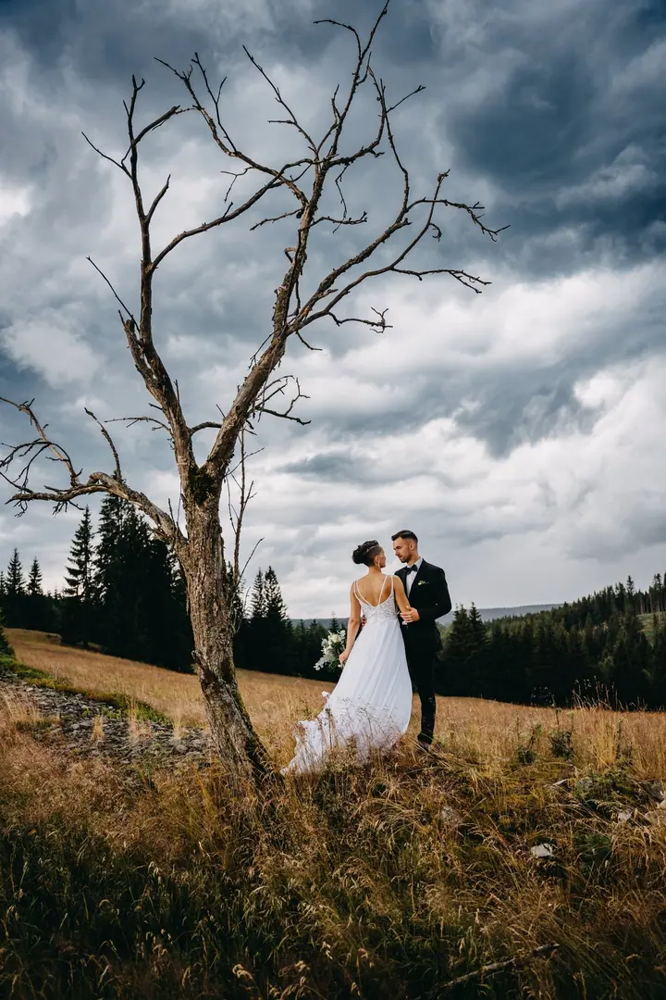
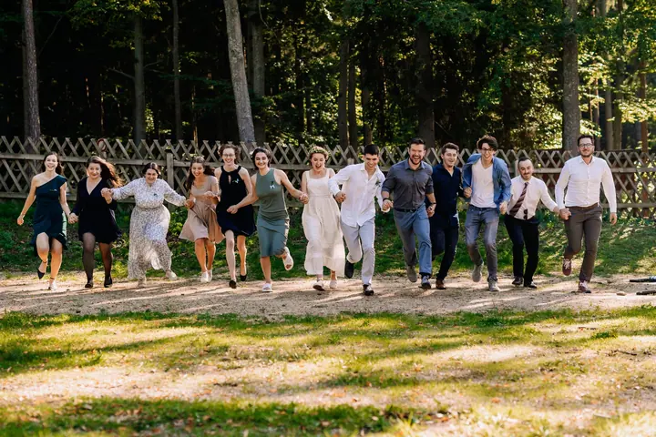

jedna
Svatby
Svatební balíčky od tří hodin focení až po celý den. Upravené fotografie dostanete na flash disku, k tomu webovou galerii s heslem a vyvolané fotky 13×18.

Svatební a portrétní fotograf · celá Česká republika, zahraničí

Jmenuji se Petr Malcát a pod značkou Shaker Studio fotím svatby, portréty ve vlastním ateliéru i společenské akce. Jinými slovy lidi ve všech možných situacích před objektivem. Za svatebním párem rád vyrazím kamkoli po republice i do zahraničí.
Více o mně
Co fotím
jedna
Svatební balíčky od tří hodin focení až po celý den. Upravené fotografie dostanete na flash disku, k tomu webovou galerii s heslem a vyvolané fotky 13×18.
Portrétní a beauty fotografování ve vlastním ateliéru. Vybrané fotografie projdou pokročilou retuší a dostanete je barevně i černobíle.
Rodinu fotím venku nebo v ateliéru. Z focení si vyberete deset fotografií se základní retuší, pět z nich dostanete vyvolaných ve formátu A5.
Fotím maturitní plesy, oslavy a večírky. Ke svatbě si můžete objednat i fotobudku s přímým tiskem, rekvizitami a vlastním osvětlením.
Lidé ve všech možných situacích před objektivem

Za objektivem
Fotografii pro veřejnost se věnuji od roku 2010 na plný úvazek. Hlavně fotím svatby a portréty, ale baví mě i plesy, oslavy a večírky. Zkrátka všude, kde jsou lidé a emoce.
Fotografii mám rád, protože se k chvílím, které se už nebudou opakovat, můžete kdykoli vrátit. Hledám krásu, kterou v dnešním uspěchaném světě snadno přehlédneme.
Kromě svateb a portrétů fotím interiéry a produkty pro menší i větší firmy, kolekce pro módní butiky a podklady pro volební kampaně. Pracuji s profesionální plnoformátovou technikou a mám za sebou přes tisíc zakázek. Domluvíme se česky, německy, rusky i anglicky.
Petr
Napište mi nebo zavolejte termín a místo. Na přání vám pošlu svatební ceník v plném znění.
Společně vybereme balíček podle toho, kolik hodin vašeho dne chcete mít nafocených. Můžete přidat i fotobudku.
Fotím od příprav přes obřad až po zábavu s hosty. V klidu a tak, abyste si den hlavně užili.
Upravené fotografie dostanete obvykle do jednoho měsíce na flash disku a ve webové galerii s heslem, k tomu vyvolané fotky.
Portfolio
Otázky
Svatební základ do tří hodin stojí 6 800 Kč, Top styl do sedmi hodin 14 000 Kč a Exclusive styl na zhruba dvanáct hodin 18 000 Kč. Základní balíček nelze objednat v hlavní sezóně od 1. 6. do 30. 9.
Fotografie obvykle předávám do jednoho měsíce, v plné kvalitě a s webovou galerií s heslem.
Ano, jezdím po celé České republice i do zahraničí, dopravu účtuji jako příplatek. Domluvím se i německy, rusky a anglicky.
Ne, neupravené fotografie ani soubory RAW neposkytuji. Dostanete pečlivě vybrané a upravené snímky.

Napište pár vět o tom, co si představujete. · +420 608 032 117